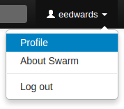
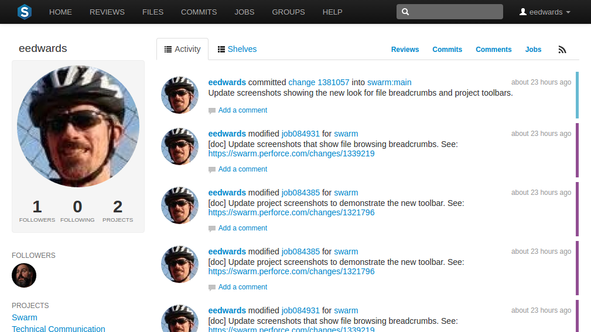
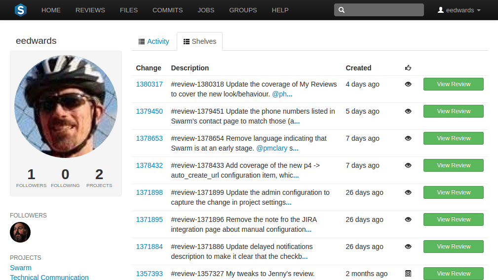
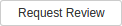

Users
 Swarm's users are based on the users configured in the Helix Versioning Engine. Display your own user profile when you are logged in by clicking on your userid at the top-right of the main toolbar and selecting .

The user profile page displays your avatar, the list of users following your activity, the users or projects that you are following, and the list of projects of which you are a member. An activity stream for events you have created is also presented.
Click the Shelves tab to display a list of the user's shelved changelists:

A shelved changelist is a pending changelist that has a copy of one or more files from within the changelist stored on the server. Shelved files are not versioned: if you update the shelved files, the update replaces any existing files on the changelist's shelf.
Note
Swarm can use multiple shelved changes to record the history of reviews. See Internal representation for details.
Swarm uses shelved changelists as the basis of its code review feature. However, not all shelved changelists are reviews. Users may shelve files for other reasons, including ensuring that the Helix Versioning Engine has a copy of work in progress, or as a way to move temporary work from one workspace to another.
 Click the to start a Swarm review for any shelved changelist that is not already involved in a review.
Click the to view the Swarm review associated with shelved changelists when a review has already started.
Viewing users
View the profile pages of other users displayed anywhere by Swarm by clicking on their avatar or userid, or by visiting the URL:
https://myswarm.url/users/userid
Note
Currently, Swarm does not provide an overall list of users.